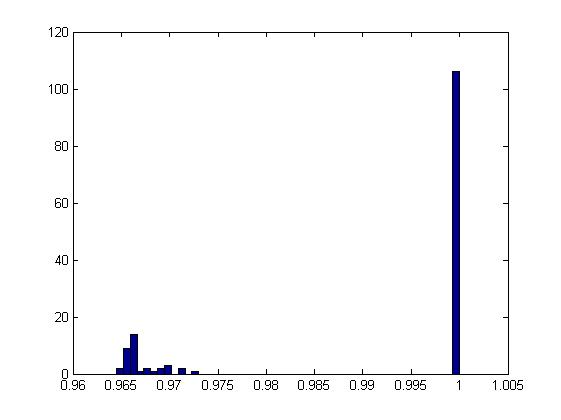
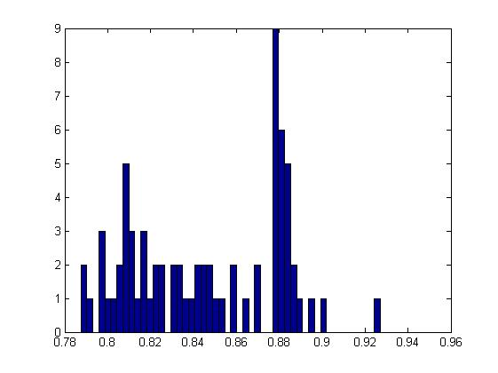

function sqlite_test_bind_typed_compressed
clear all
close all
clc
dummy = mksqlite('version mex');
fprintf( '\n\n' );
database = 'demo.db';
mksqlite( 'open', database );
mksqlite( 'drop table if exists demo' );
mksqlite( ['CREATE TABLE demo ' , ...
' ( id PRIMARY KEY, ' , ...
' type, ' , ...
' data, ' , ...
' size, ' , ...
' level, ' , ...
' pack_ratio, ' , ...
' pack_time, ' , ...
' unpack_time, ' , ...
' md5_hash ' , ...
' )'] );
fprintf( 'Please wait, while generating 500 entries...\n' );
for n = 1:500
compression_level = randi(10)-1;
use_typed_blobs = randi(2)-1;
if ~use_typed_blobs
compression_level = 0;
end
data = [];
while isempty( data )
type = randi(3);
switch type
case 1
if use_typed_blobs
data = randn( 1 + randi( 9 ) );
end
case 2
data = randn( 1e4 + randi(1e4), 1);
case 3
data = cumsum( randn( 1e4 + randi(1e4), 1) );
end
end
nElements = numel( data );
mksqlite( 'typedBLOBs', use_typed_blobs );
mksqlite( 'compression', 'blosclz', compression_level );
mksqlite( ['INSERT INTO demo ', ...
'(id, type, data, size, level) values (?,?,?,?,?)'], ...
n, type, data, nElements, compression_level );
mksqlite( ['UPDATE demo SET ', ...
' pack_time = BDCPackTime(data), ' , ...
' unpack_time = BDCUnpackTime(data), ' , ...
' pack_ratio = BDCRatio(data), ' , ...
' md5_hash = MD5(data) ' , ...
' WHERE id = ?'], n );
if length(dbstack) == 1
clc, fprintf( '%d\n', n );
end
end
query = mksqlite( ['SELECT type, size, level, pack_ratio, ', ...
'pack_time, unpack_time FROM demo ', ...
'WHERE type<3 AND level>0'] );
figure, hist( [query.pack_ratio]', 50 )
min_level = 0;
query = mksqlite( ['SELECT type, size, level, pack_ratio, ', ...
'pack_time, unpack_time FROM demo ', ...
'WHERE type=3 AND level>?'], min_level );
figure, hist( [query.pack_ratio]', 50 )
mksqlite( 'close' );
mksqlite Version 2.2 build: 109, ein MATLAB Interface zu SQLite
(c) 2008-2016 by Martin Kortmann <mail@kortmann.de>
Andreas Martin <andimartin@users.sourceforge.net>
basierend auf SQLite Version 3.10.2 - http://www.sqlite.org
mksqlite verwendet darueber hinaus:
- DEELX perl kompatible regex engine Version 1.3 (Sswater@gmail.com)
- BLOSC/LZ4 1.3.0-rc3.dev zur Datenkompression (Francesc Alted / Yann Collett)
- MD5 Message-Digest Algorithm (RFC 1321) Implementierung von Alexander Peslyak
Platform: PCWIN64, little endian
Please wait, while generating 500 entries...
 